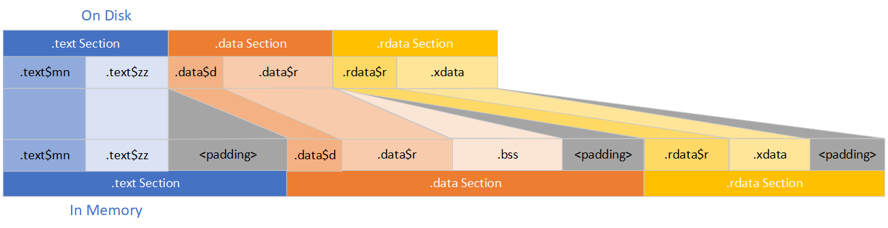

SizeBench is a tool for analyzing several things within a Windows PE binary (an EXE, DLL, SYS file, and so on). It's primarily targeted at helping understand binary size, though the feature set extends beyond that.
SizeBench aims to serve a few purposes:
It operates on a pair of files - the binary in question and its corresponding PDB. When doing a diff, you'll need the binary and PDB from before and after the change in question.
What's important is that it operates on the final binary after all optimizations have occurred, such as the linker doing dead code removal, Identical COMDAT Folding (ICF), Profile Guided Optimization (PGO), Link-Time Code Generation (LTCG), and so on. Generally this makes it most useful when run on your Release/fre/shipping binaries, so you can optimize the things that arrive in their final form to customers.
SizeBench can be installed from the Microsoft Store. It should auto-update using the Store's updater.
First you'll need a binary and its corresponding PDB. Once you launch the app, you should see the thrilling starting point shown on the right.
To begin, you can open a binary to analyze it, or you can open a diff to see how things changed between two versions.
When you open a binary (whether individually or as a diff) you'll need to point to both the binary itself and its PDB. After you do, a tab gets opened where
you can dig into more details. If you point to the PDB first, SizeBench will try to locate the binary - for the moment it only looks side-by-side with the
PDB.
You can start SizeBench from the command line as well:
SizeBench tries to make it easy for you to share an analysis with your colleague, so you can look at the same view quickly. Two mechanisms help with
this: deeplinking, and excel exports.
Whenever you're on a page in the app, you can click the deeplink button (circled in red in the screenshot to the right) to copy a link to your
clipboard. That link will launch SizeBench, open the exact binary/PDB you're viewing jump to the same page, and should result in basically the
same view you have now.
Whenever you use an "Export to Excel" button in the app, you'll get an Excel workbook with two worksheets in it. The first will contain the data you
asked to export, the second will contain some helpful metadata for your records including a deeplink back to the same data in the UI, the title of
the page you were on which can often remind you exactly what that set of data represents, the path to the binary/PDB opened, and so on. If sharing
one of these exports, this can help the receiver to be able to start analyzing stuff from the same place.
SizeBench is a niche tool and you may be wondering - does this really work to understand a meaningful-sized codebase? How did this tool come into being and who uses it? Those are excellent questions and the answer is yes, this tool does work even on large codebases! Originally, SizeBench was developed for Windows Phone and Windows IoT scenarios, both of which can be heavily resource-constrained, so size matters more than ever there. Over time as the tool grew in functionality, SizeBench has been used by numerous teams inside Microsoft over the last 8 years as it has evolved. Teams that have utilized SizeBench include Windows, Office, Dynamics, and numerous of Microsoft's game studios.
A great success story is that a game studio at Microsoft was able to utilize SizeBench to shrink the size of their code by around 50% shortly before launch, freeing up more memory for game assets and other important data that impacts the gameplay, especially on devices with fixed amounts of memory like Xbox One. We've similarly been able to reduce the size of the Chromium-powered Microsoft Edge by 10% or more, and numerous teams in Windows have used SizeBench to resist growth in the operating system.
SizeBench has also been used to zero in on problems with C++ exception handling overhead, which ultimately resulted in the new __CxxFrameHandler4 that is dramatically more efficient at encoding exception handling metadata - see this blog post for details on that.
All this is to say that SizeBench is up to the task of even very complex codebases which use numerous optimizations and the latest and greatest technologies. If you find a bug related to your binary/codebase, please file a bug as SizeBench aims to be usable by all teams across all binaries in time - though for now pay attention to the notable limitations called out below.
Throughout SizeBench you will frequently see different columns in the UI showing "Size on Disk" and "Size in Memory" - in many cases they'll show very similar or identical
numbers, so what are these and how are they different?
To explain that, let's touch on how binaries are stored on-disk and how they get loaded by the Windows OS loader into memory. When a binary is stored on disk, it is stored in
multiples of its "file alignment" (default 512 bytes). If you have a piece of code that takes up 100 bytes, then it takes up 100 bytes on disk as you'd expect. If that's the
only thing in its section, then there would be 412 bytes of padding after that to round up to a full 512 byte file alignment chunk. When the OS loader
wants to bring this into memory, however, it can only enforce things at a page level (typically 4KB). Since this is the smallest unit that can have things like executable (or not),
read-only (or read-write), and so on enforced correctly. So, it will need to expand those 512 bytes up to 4,096 bytes with a bunch of padding to fill the page.
This is illustrated in the diagram below.

In this diagram, we can see that .text is fairly simple and matches the description above. It has some size on disk, which may be due to multiple COFF Groups
(.text$mn and .text$zz in this example).
The .data section is more interesting, though - it has two COFF Groups on disk (.data$d and .data$r),
the same as .text. So it expands out some padding when it gets loaded into memory - so far the same. But notice there is another COFF Group that exists only
in memory called ".bss" - what is this? BSS stands for "block started by symbol" and it is an optimization used by the toolchain to avoid writing redundant data on disk. If a bunch
of read-write data is zero-initialized in the code, the toolchain is smart enough to know it doesn't need to write a bunch of zeros on disk for that, so they don't exist on-disk. When loaded
into memory, the pages are zero-initialized in the kernel, so this .bss is just mapped into virtual memory without having existed on-disk, and is full of all zeros as intended.
Neat!
Thus, if you are only interested in optimizing your on-disk size, or file size for the purposes of reducing network usage to transmit an update, or things like that - then
you won't care about optimizing .bss. But if you are primarily focused on using less memory in a process, then .bss can be just as interesting to look at as bytes that
exist on-disk. So SizeBench shows you both the size on disk and the size in memory, and you can use whichever is appropriate for what you'd like to investigate or optimize.
SizeBench has been built to analyze native C and C++ code, and has relatively recent support for Rust and Zig. Your mileage may vary with other languages.
Managed code (C#/Visual Basic .NET/F#/etc.) cannot be analyzed at this time due to substantial differences in how the code is structured and the way the PDBs produce metadata.
For managed code you may find the Sizoscope tool useful.
Similarly, SizeBench cannot analyze Java bytecode, interpreted code like JavaScript or Lua, and so on.
SizeBench relies on extensive data stored within a PDB to correlate everything together. Currently, lld-link (the Clang/LLVM linker) produces simpler PDBs that do not have enough information. You can take OBJ and LIB files produced by clang and link them together with link.exe (the MSVC linker) if you want to use SizeBench - the results won't exactly match what lld-link would have produced in binary form, but they tend to be close enough to use SizeBench's feature set.
C++ has a rule called the "One Definition Rule". If this rule is violated, then many static
analysis tools are unable to work effectively - including SizeBench. SizeBench assumes that each type exists exactly once, so it can understand how type layouts work,
how function definitions work for wasteful virtual analysis, and so on.
If your binary violates ODR, SizeBench analyses may be inaccurate. For the moment, SizeBench does not attempt to detect ODR violations as it is very expensive to do so
- an ODR checker is in plan to add later, but for now it's up to you to not violate it.
SizeBench has many features that you can use when analyzing a single binary. Full details can be found on this page.
Most of the features that work for single binaries also work when diffing between two binaries. Full details on what you can do with a diff can be found on this page.
I'm working to get a location (probably GitHub) that can be used to track issues. In the meantime, you can e-mail SizeBenchTeam@micosoft.com.